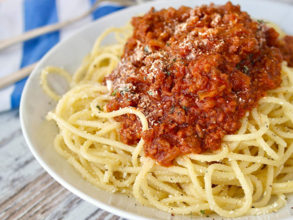
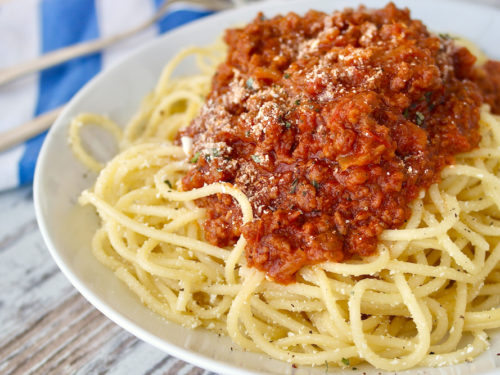

Spaghetti recipe
This spaghetti sauce recipe may be the first
thing I learned to cook, completely by myself, when
I was really young. As I got better at cooking and
baking (and because I loved it so much) I can
specifically remember two recipes my Mom would let me
make all by myself
Ingredients
-
1 pound ground beef
(or ½ lb ground Italian sausage and ½ lb ground
beef)
- 1 medium onion,choped
- 15 ounces tomato sauce
- 6 ounces tomato paste
- 1/2 teaspoon italin seasoning
- 1 tablespoon dried parsley flakes
- 1 teaspoon garlic powder
- crushed red pepper flakes, to taste
- 1 cup water
- 1 tablespoon worcestershire sugar
- 1 tablespoon granulated sugar
- spagherri noodles
Instruction
- Season ground beef with salt and pepper
- In a large skillet, add the beef and chopped onion and brown.Drain excess grease
- Add tomato sauce, tomato paste, Italian seasoning, parsley,
garlic powder,
crushed red pepper, worcestershire, and sugar to the skillet
- Stir well to combine and bring to a boil. Add water and stir well
- Reduce heat and simmer for
30 minutes. Add chopped basil before serving, if desired
- This sauce tastes great in Spaghetti Pie,
Million Dollar Spaghetti, Slow Cooker Lasagna and
Instant Pot Spaghetti
 
